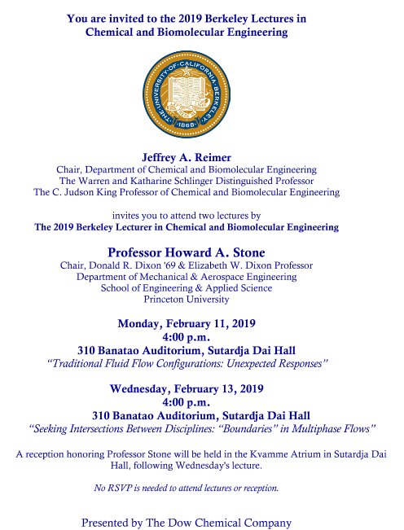

In lieu of holding our Berkeley Fluids Seminar this week we are promoting the lectures that will be given by Prof. Howard Stone. See flyer below for details.
Prof. Howard A. Stone (Princeton University)
16:00, 310 Banatao Auditorium, Sutardja Dai Hall
Traditional Fluid Flow Configurations: Unexpected Responses
Monday, February 11, 2019
Seeking Intersections Between Disciplines: “Boundaries” in Multiphase Flows
Wednesday, February 13, 2019
Hosted by the Department of Chemical and Biomolecular Engineering
|  |
Bio: Professor Howard A. Stone received the Bachelor of Science degree in Chemical Engineering from the University of California at Davis in 1982 and the PhD in Chemical Engineering from Caltech in 1988. Following a postdoctoral year in the Department of Applied Mathematics and Theoretical Physics at the University of Cambridge, in 1989 he joined the faculty of the (now) School of Engineering and Applied Sciences at Harvard University, where he eventually became the Vicky Joseph Professor of Engineering and Applied Mathematics. In 1994 Professor Stone received both the Joseph R. Levenson Memorial Award and the Phi Beta Kappa Teaching Prize, which are the only two teaching awards given to faculty in Harvard College. In 2000 he was named a Harvard College Professor for his contributions to undergraduate education. In July 2009 he moved to Princeton University where he is Donald R. Dixon 69 and Elizabeth W. Dixon Professor in Mechanical and Aerospace Engineering.